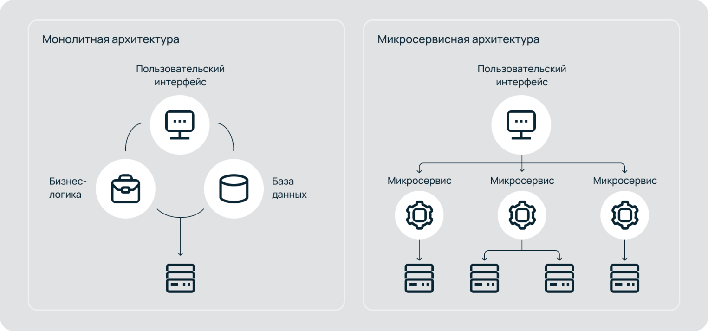

Содержание
Архитектура программных систем
Архитектура программной системы определяет её структуру, взаимодействие компонентов и способы организации программного кода. От выбранной архитектуры зависят удобство разработки, масштабируемость и возможность дальнейшего изменения системы.

Одним из распространённых вариантов является монолитная архитектура, при которой основные компоненты приложения объединены в единую систему. При увеличении проекта такая архитектура может усложнять внесение изменений.
Основные компоненты и направления
Сложные программные системы состоят из компонентов, которые выполняют отдельные задачи и взаимодействуют друг с другом.
- Пользовательский интерфейс - обеспечивает взаимодействие пользователя с программой.
- Бизнес-логика - отвечает за выполнение основных операций приложения.
- База данных - предназначена для хранения и обработки информации.
- Система интеграции - обеспечивает обмен данными между различными компонентами.
При разработке программного обеспечения важно учитывать технический долг. Он возникает, когда временные решения или недостатки архитектуры усложняют дальнейшую разработку.
Интеграция и миграция
Интеграция позволяет объединять отдельные программные компоненты и обеспечивать их совместную работу. Миграция представляет собой процесс переноса системы на новую платформу или архитектуру.
Для упрощения сопровождения программного обеспечения применяется рефакторинг - изменение внутренней структуры кода без изменения его внешнего поведения.
При работе с контейнерами и системами управления приложениями можно использовать документацию:
Терминологический словарь
- Архитектура
- Структура программной системы и принципы взаимодействия её компонентов.
- Технический долг
- Дополнительные затраты на разработку и сопровождение, возникающие из-за ранее принятых технических решений.
- Рефакторинг
- Изменение внутренней структуры программного кода без изменения внешнего поведения программы.
- Интеграция
- Объединение компонентов для совместной работы.
- Миграция
- Перенос программной системы на другую платформу или изменение её архитектуры.